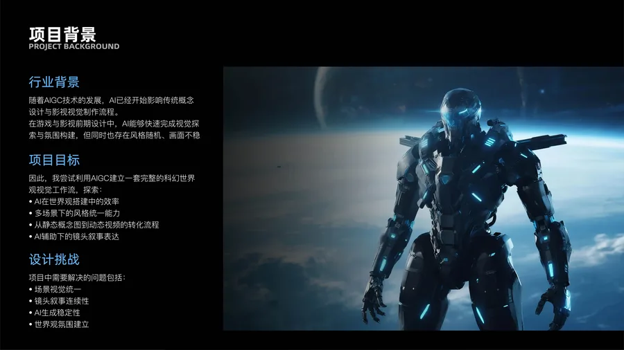
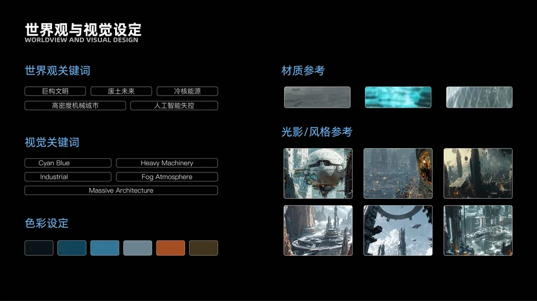
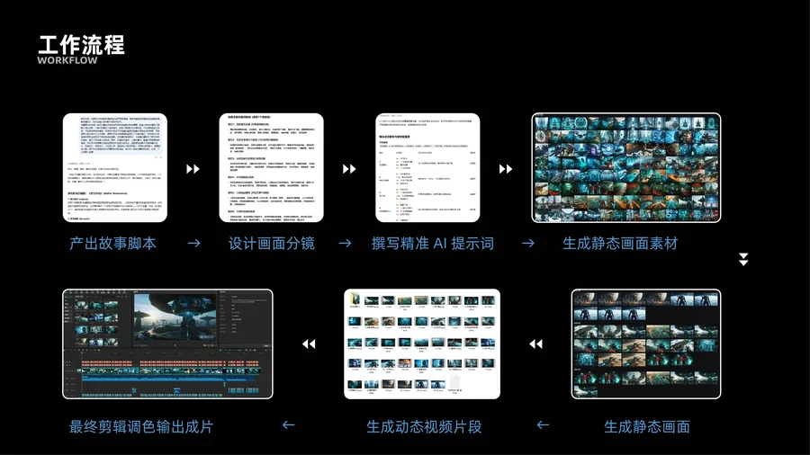
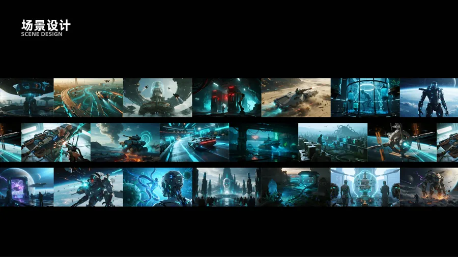
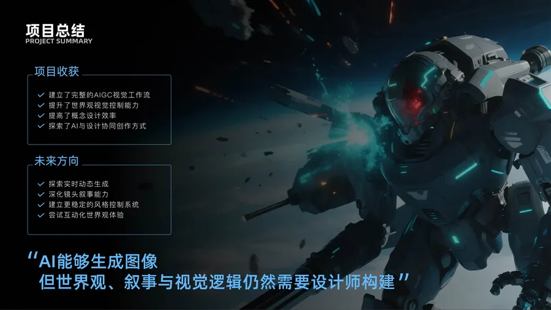

项目背景
随着AIGC技术的发展，AI已经开始影响传统概念设计与影视视觉制作流程。在游戏与影视前期设计中，AI能够快速完成视觉探索与氛围构建，但同时也存在风格随机、画面不稳定的问题。因此，我尝试利用AIGC建立一套完整的科幻世界观视觉工作流，探索AI在世界观搭建中的效率、多场景下的风格统一能力、从静态概念图到动态视频的转化流程，以及AI辅助下的镜头叙事表达。
世界观与视觉设定
世界观关键词：巨构文明 · 废土未来 · 冷核能源 · 高密度机械城市 · 人工智能失控
视觉关键词：Cyan Blue · Heavy Machinery · Industrial Fog Atmosphere · Massive Architecture
工作流程
利用DeepSeek生成故事脚本 → 设计画面分镜 → 撰写精准AI提示词 → 生成静态画面素材 → 利用即梦AI图生视频功能生成动态视频片段 → 最终在剪辑软件中调整剪辑调色输出成片
项目总结
建立了完整的AIGC视觉工作流，提升了世界观视觉控制能力，提高了概念设计效率，探索了AI与设计协同创作方式。
未来方向：探索实时动态生成、深化镜头叙事能力、建立更稳定的风格控制系统、尝试互动化世界观体验。
「AI能够生成图像，但世界观、叙事与视觉逻辑仍然需要设计师构建」





